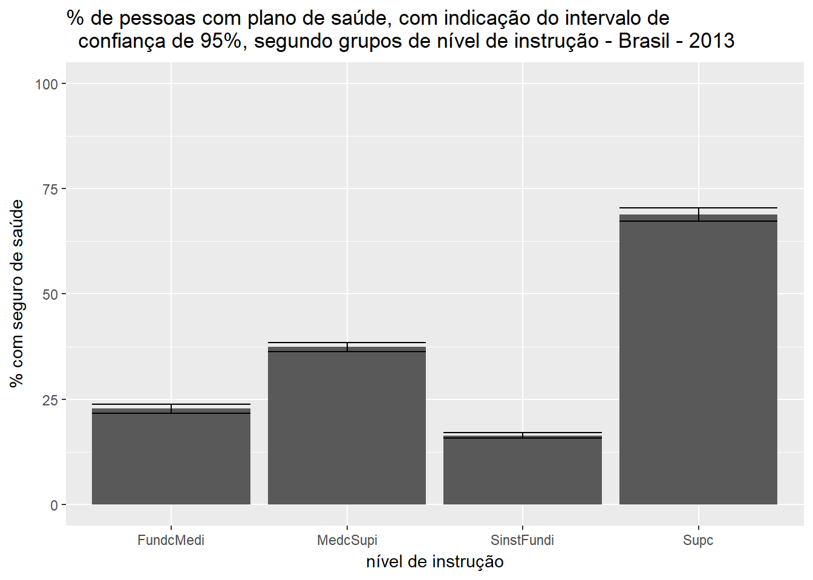

Capítulo 1 Introdução
1.1 Motivação
Este livro trata de problema de grande importância para os usuários de dados obtidos através de pesquisas amostrais por agências produtoras de informações estatísticas. Tais dados são comumente utilizados em análises descritivas envolvendo o cálculo de estimativas para totais, proporções, médias e razões, nas quais, em geral, são devidamente considerados os pesos distintos das observações e o planejamento da amostra que lhes deu origem.
Outro uso destes dados, denominado secundário, é a construção e ajuste de modelos, feita geralmente por analistas que trabalham fora das agências produtoras dos dados. Neste caso, o foco é, essencialmente, estabelecer a natureza de relações ou associações entre variáveis. Para isto, a estatística clássica conta com um arsenal de ferramentas de análise, já incorporado aos principais pacotes estatísticos disponíveis. O uso destes pacotes se faz, entretanto, sob condições que não refletem a complexidade usualmente envolvida nas pesquisas amostrais de populações finitas. Em geral, partem de hipóteses básicas que só são válidas quando os dados são obtidos através de amostras aleatórias simples com reposição (AASC). Tais pacotes estatísticos não consideram os seguintes aspectos relevantes no caso de amostras complexas:
i.) probabilidades distintas de seleção das unidades;
ii.) conglomeração das unidades;
iii.) estratificação;
iv.) calibração ou imputação para não-resposta e outros ajustes.
As estimativas pontuais de parâmetros da população ou de modelos são influenciadas por pesos distintos das observações. Além disso, as estimativas de variância (ou da precisão dos estimadores) são influenciadas pela conglomeração, estratificação e pesos, ou no caso de não resposta, também por eventual imputação de dados faltantes. Ao ignorar estes aspectos, os pacotes tradicionais de análise podem produzir estimativas incorretas das variâncias das estimativas pontuais.
A seguir vamos apresentar um exemplo de uso de dados de uma pesquisa amostral real para ilustrar como os pontos i) a iv) acima mencionados afetam a inferência sobre quantidades descritivas populacionais tais como médias, proporções, razões e totais.
Os dados deste exemplo são relativos à distribuição dos pesos na amostra da Pesquisa sobre Padrões de Vida (PPV), realizada pelo IBGE nos anos 1996-97. (Albieri and Bianchini 1997) descrevem resumidamente a Pesquisa sobre Padrões de Vida (PPV), que foi realizada nas Regiões Nordeste e Sudeste do País, considerando 10 estratos geográficos, a saber: Região Metropolitana de Fortaleza, Região Metropolitana de Recife, Região Metropolitana de Salvador, restante da área urbana do Nordeste, restante da área rural do Nordeste, Região Metropolitana de Belo Horizonte, Região Metropolitana do Rio de Janeiro, Região Metropolitana de São Paulo, restante da área urbana do Sudeste e restante da área rural do Sudeste.
O plano amostral empregado na seleção da amostra da PPV foi de dois estágios, com estratificação das unidades primárias de amostragem (no caso os setores censitários da base geográfica do IBGE conforme usada para o Censo Demográfico de 1991), seleção destes setores com probabilidade proporcional ao tamanho, e seleção aleatória das unidades de segundo estágio (domicílios). O tamanho da amostra para cada estrato geográfico foi fixado em 480 domicílios, e o número de setores selecionados foi fixado em 60, com 8 domicílios selecionados em cada setor. A exceção ficou por conta dos estratos que correspondem ao restante da área rural de cada Região, onde foram selecionados 30 setores e 16 domicílios por setor, em função da dificuldade de acesso a esses setores, o que implicaria em aumento de custo da coleta.
Os setores de cada um dos 10 estratos geográficos foram subdivididos em 3 estratos de acordo com a renda média mensal do chefe do domicílio por setor, perfazendo um total de 30 estratos geográficos versus renda. Em seguida foi feita uma alocação proporcional, com base no número de domicílios particulares permanentes ocupados do estrato de renda no universo de cada estrato geográfico, obtidos pelo Censo de 1991. No final foram obtidos 554 setores na amostra, distribuídos tal como revela a Tabela 1.1.
| Estrato | População | Amostra |
|---|---|---|
| RM Fortaleza | 2263 | 62 |
| RM Recife | 2309 | 61 |
| RM Salvador | 2186 | 61 |
| Restante Nordeste Urbano | 15057 | 61 |
| Restante Nordeste Rural | 23711 | 33 |
| RM Belo Horizonte | 3283 | 62 |
| RM Rio de Janeiro | 10420 | 61 |
| RM São Paulo | 14931 | 61 |
| Restante Sudeste Urbano | 25855 | 61 |
| Restante Sudeste Rural | 12001 | 31 |
| Total | 112016 | 554 |
A Tabela 1.2 apresenta um resumo das distribuições dos pesos amostrais para as Regiões Nordeste (5 estratos geográficos) e Sudeste (5 estratos geográficos) separadamente e para o conjunto da amostra da PPV.
| Região | Mínimo | Q1 | Mediana | Q3 | Máximo |
|---|---|---|---|---|---|
| Nordeste | 724 | 1194 | 1556 | 6937 | 15348 |
| Sudeste | 991 | 2789 | 5429 | 9509 | 29234 |
| Nordeste_Sudeste | 724 | 1403 | 3785 | 8306 | 29234 |
No cálculo dos pesos foram consideradas as probabilidades de inclusão dos elementos na amostra bem como correções devido a não-resposta. Contudo, a grande variabilidade dos pesos amostrais da PPV é devida à variabilidade das probabilidades de inclusão na amostra, ilustrando desta forma o ponto i) citado anteriormente nesta seção.
Na análise de dados desta pesquisa, deve-se considerar que há elementos da amostra com pesos bem distintos. Por exemplo, a razão entre o maior e o menor peso é cerca de 40 vezes. Tais pesos são utilizados para expandir os dados, multiplicando-se cada observação pelo seu respectivo peso. Assim, por exemplo, para estimar quantos elementos da população pertencem a determinado conjunto (domínio), basta somar os pesos dos elementos da amostra que pertencem a este conjunto. É possível ainda incorporar os pesos, de maneira simples e natural, quando estimamos medidas descritivas simples da população tais como totais, médias, proporções, razões, etc.
Por outro lado, quando utilizamos a amostra para estudos analíticos, as opções padrão disponíveis nos pacotes estatísticos usuais para levar em conta os pesos distintos das observações são apropriadas somente para observações independentes e identicamente distribuídas (IID). Por exemplo, os procedimentos padrão disponíveis para estimar a média populacional permitem utilizar pesos distintos das observações amostrais, mas tratariam tais pesos como se fossem frequências de observações repetidas na amostra, e portanto interpretariam a soma dos pesos como tamanho amostral, situação que na maioria das vezes gera inferências incorretas sobre a precisão das estimativas, pois o tamanho da amostra é muito menor que a soma dos pesos amostrais usualmente encontrados nos arquivos de microdados de pesquisas disseminados por agências de estatísticas oficiais. Em tais pesquisas, a opção mais freqüente é disseminar pesos que somados estimam o total de unidades da população.
Além disso, a variabilidade dos pesos para distintas observações amostrais produz impactos tanto na estimação pontual quanto na estimação das variâncias dessas estimativas, que sofre ainda influência da conglomeração e estratificação - pontos ii) e iii) mencionados anteriormente.
Para exemplificar o impacto de ignorar os pesos e o plano amostral ao estimar quantidades descritivas populacionais, tais como totais, médias, proporções e razões, calculamos estimativas de quantidades desses diferentes tipos usando a amostra da PPV juntamente com estimativas das respectivas variâncias. Essas estimativas de variâncias foram calculadas sob duas estratégias: considerando amostragem aleatória simples (portanto ignorando o plano amostral efetivamente adotado), e considerando o plano amostral da pesquisa e os pesos diferenciados das unidades. A razão entre as estimativas de variância obtidas sob o plano amostral verdadeiro e sob amostragem aleatória simples foi calculada para cada uma das estimativas consideradas usando a library survey do R (Lumley 2017) . Essa razão fornece uma medida do efeito de ignorar o plano amostral . Os resultados das estimativas ponderadas e variâncias considerando o plano amostral são apresentados na Tabela 1.3 , juntamente com as medidas dos efeitos de plano amostral (EPA). Exemplos de utilização da library survey para obtenção de estimativas apresentadas na 1.3 estão na Seção 1.3. As outras estimativas da Tabela 1.3 podem ser obtidas de maneira análoga.
Na Tabela 1.3 apresentamos as estimativas dos seguintes parâmetros populacionais:
- Número médio de pessoas por domicílio;
- % de domicílios alugados;
- Número total de pessoas que avaliaram seu estado de de saúde como ruim;
- Total de analfabetos de 7 a 14 anos;
- Total de analfabetos de mais de 14 anos;
- % de analfabetos de 7 a 14 anos;
- % de analfabetos de mais de 14 anos;
- Total de mulheres de 12 a 49 anos que tiveram filhos;
- Total de mulheres de 12 a 49 anos que tiveram filhos vivos; 10.Total de mulheres de 12 a 49 anos que tiveram filhos mortos;
- Número médio de filhos tidos por mulheres de 12 a 49 anos;
- Razão de dependência.
| Parâmetro | Estimativa | DP | EPA |
|---|---|---|---|
| 1. | 3.62 | 0.05 | 2.64 |
| 2. | 10.70 | 1.15 | 2.97 |
| 3. | 1208123.00 | 146681.00 | 3.37 |
| 4. | 1174220.00 | 127982.00 | 2.64 |
| 5. | 4792344.00 | 318877.00 | 4.17 |
| 6. | 11.87 | 1.18 | 2.46 |
| 7. | 10.87 | 0.67 | 3.86 |
| 8. | 10817590.00 | 322947.00 | 2.02 |
| 9. | 10804511.00 | 323182.00 | 3.02 |
| 10. | 709145.00 | 87363.00 | 2.03 |
| 11. | 1.39 | 0.03 | 1.26 |
| 12. | 0.53 | 0.01 | 1.99 |
Como se pode observar da quarta coluna da Tabela 1.3, os valores do efeito do plano amostral variam de um modesto 1,26 para o número médio de filhos tidos por mulheres em idade fértil (12 a 49 anos de idade) até um substancial 4,17 para o total de analfabetos entre pessoas de mais de 14 anos. Nesse último caso, usar a estimativa de variância como se o plano amostral fosse amostragem aleatória simples implicaria em subestimar consideravelmente a variância da estimativa pontual, que é mais que 4 vezes maior se consideramos o plano amostral efetivamente utilizado.
Note que as variáveis e parâmetros cujas estimativas são apresentadas na Tabela 1.3 não foram escolhidas de forma a acentuar os efeitos ilustrados, mas tão somente para representar distintos parâmetros (médias, razões, totais, proporções) e variáveis de interesse. Os resultados apresentados para as estimativas de EPA ilustram bem o cenário típico em pesquisas amostrais complexas: o impacto do plano amostral sobre a inferência varia conforme a variável e o tipo de parâmetro de interesse. Note ainda que à exceção do menor valor, todas as demais estimativas de EPA apresentaram valores superiores a 2.
1.2 Objetivos do Livro
Este livro tem três objetivos principais:
ilustrar e analisar o impacto das simplificações feitas ao utilizar pacotes usuais de análise de dados quando estes são provenientes de pesquisas amostrais complexas;
apresentar uma coleção de métodos e recursos computacionais disponíveis para análise de dados amostrais complexos, equipando o analista para trabalhar com tais dados, reduzindo assim o risco de inferências incorretas;
ilustrar o potencial analítico de muitas das pesquisas produzidas por agências de estatísticas oficiais para responder questões de interesse, mediante uso de ferramentas de análise estatística agora já bastante difundidas, aumentando assim o valor adicionado destas pesquisas.
Para alcançar tais objetivos, adota-se uma abordagem fortemente ancorada na apresentação de exemplos de análises de dados obtidos em pesquisas amostrais complexas, usando pacotes clássicos e também recursos do pacote estatístico R (http://www.r-project.org/). A comparação dos resultados das análises feitas das duas formas permite avaliar o impacto de não se considerar os pontos i) a iv) anteriormente citados. O ponto iv) não será tratado de forma completa neste texto. O leitor interessado na análise de dados sujeitos a não-resposta pode consultar (Kalton 1983a), (Little and Rubin 2002), (Rubin 1987), (Särndal, Swensson, and Wretman 1992), ou Schafer (1997), por exemplo.
Estrutura do Livro
O livro está organizado em catorze capítulos. Este primeiro capítulo discute a motivação para estudar o assunto e apresenta uma ideia geral dos objetivos e da estrutura do livro.
No segundo capítulo, procuramos dar uma visão das diferentes abordagens utilizadas na análise estatística de dados de pesquisas amostrais complexas. Apresentamos um referencial para inferência com ênfase no Modelo de Superpopulação que incorpora, de forma natural, tanto uma estrutura estocástica para descrever a geração dos dados populacionais (modelo) como o plano amostral efetivamente utilizado para obter os dados amostrais (plano amostral). As referências básicas para seguir este capítulo são cap2 em (Nascimento Silva 1996), cap1 em (Skinner, Holt, and Smith 1989) e caps 1 e 2 em (Chambers and Skinner 2003).
Esse referencial tem evoluído ao longo dos anos como uma forma de permitir a incorporação de idéias e procedimentos de análise e inferência usualmente associados à Estatística Clássica à prática da interpretação de dados provenientes de pesquisas amostrais. Apesar dessa evolução, sua adoção não é livre de controvérsia e uma breve revisão dessa discussão é apresentada no Capítulo 2.
No Capítulo 3 apresentamos uma revisão sucinta, a título de recordação, de alguns resultados básicos da Teoria de Amostragem, requeridos nas partes subsequentes do livro. São discutidos os procedimentos básicos para estimação de totais considerando o plano amostral, e em seguida revistas algumas técnicas para estimação de variâncias úteis para o caso de estatísticas complexas, tais como razões e outras estatísticas requeridas na inferência analítica com dados amostrais. As referências centrais para este capítulo são caps 2 e 3 em (Särndal, Swensson, and Wretman 1992), (Wolter 1985) e (Cochran 1977).
No Capítulo 1.3 introduzimos o conceito de Efeito do Plano Amostral (EPA), que permite avaliar o impacto de ignorar a estruturação dos dados populacionais ou do plano amostral sobre a estimativa da variância de um estimador. Para isso, comparamos o estimador da variância apropriado para dados obtidos por amostragem aleatória simples (hipótese de AAS) com o valor esperado deste mesmo estimador sob a distribuição de aleatorização induzida pelo plano amostral efetivamente utilizado (plano amostral verdadeiro). Aqui a referência principal foi o livro (Skinner, Holt, and Smith 1989), complementado com o texto de (Lehtonen and Pahkinen 1995).
No Capítulo 5 estudamos a questão do uso de pesos ao analisar dados provenientes de pesquisas amostrais complexas, e introduzimos um método geral, denominado Método de Máxima Pseudo Verossimilhança(MPV), para incorporar os pesos e o plano amostral na obtenção não só de estimativas de parâmetros dos modelos regulares de interesse, como também das variâncias dessas estimativas. As referências básicas utilizadas nesse capítulo foram (Skinner, Holt, and Smith 1989), (Pfeffermann 1993), (Binder 1983) e cap.6 em (Nascimento Silva 1996).
O Capítulo 6 trata da obtenção de Estimadores de Máxima Pseudo-Verossimilhança (EMPV) e da respectiva matriz de covariância para os parâmetros em modelos de regressão linear e de regressão logística, quando os dados vêm de pesquisas amostrais complexas. Apresentamos um exemplo de aplicação com dados do Suplemento Trabalho da Pesquisa Nacional por Amostra de Domicílios (PNAD) de 90, onde ajustamos um modelo de regressão logística. Neste exemplo, são feitas comparações entre resultados de ajustes obtidos através de um programa especializado, a library survey (Lumley 2017), e através de um programa de uso geral, a library glm do R. As referências centrais são cap6 em (Nascimento Silva 1996) e Binder(1983), além de (Pessoa, Nascimento Silva, and Duarte 1997).
Os Capítulos 7 e 8 tratam da análise de dados categóricos com ênfase na adaptação dos testes clássicos para proporções, de independência e de homogeneidade em tabelas de contingência, para dados provenientes de pesquisas amostrais complexas. Apresentamos correções das estatísticas clássicas e a estatística de Wald baseada no plano amostral. As referências básicas usadas nesses capítulos foram os livros cap. 4, (Skinner, Holt, and Smith 1989) e cap. 7 (Lehtonen and Pahkinen 1995). Também são apresentadas as idéias básicas de como efetuar ajuste de modelos log-lineares a dados de frequências em tabelas de múltiplas entradas.
O Capítulo 9 trata da estimação de densidades e funções de distribuição, ferramentas que tem assumido importância cada dia maior com a maior disponibilidade de microdados de pesquisas amostrais para analistas fora das agências produtoras.
O Capítulo 10 trata da estimação e ajuste de modelos hierárquicos considerando o plano amostral. Modelos hierárquicos (ou modelos multinível) têm sido bastante utilizados para explorar situações em que as relações entre variáveis de interesse em uma certa população de unidades elementares (por exemplo, crianças em escolas, pacientes em hospitais, empregados em empresas, moradores em regiões, etc.) são afetadas por efeitos de grupos determinados ao nível de unidades conglomeradas (os grupos). Ajustar e interpretar tais modelos é tarefa mais difícil que o mero ajuste de modelos lineares mesmo em casos onde os dados são obtidos de forma exaustiva, mas ainda mais complicada quando se trata de dados obtidos através de pesquisas amostrais complexas. Várias alternativas de métodos para ajuste de modelos hierárquicos estão disponíveis, e este capítulo apresenta uma revisão de tais abordagens, ilustrando com aplicações a dados de pesquisas amostrais de escolares.
O Capítulo 11 trata da não resposta e suas conseqüências sobre a análise de dados. As abordagens de tratamento usuais, reponderação e imputação, são descritas de maneira resumida, com apresentação de alguns exemplos ilustrativos, e referências à ampla literatura existente sobre o assunto. Em seguida destacamos a importância de considerar os efeitos da não-resposta e dos tratamentos compensatórios aplicados nas análises dos dados resultantes, destacando em particular as ferramentas disponíveis para a estimação de variâncias na presença de dados incompletos tratados mediante reponderação e/ou imputação.
O Capítulo 12 trata de assunto ainda emergente: diagnósticos do ajuste de modelos quando os dados foram obtidos de amostras complexas. A literatura sobre o assunto ainda é incipiente, mas o assunto é importante e procura-se estimular sua investigação com a revisão do estado da arte no assunto.
O Capítulo 13 discute algumas formas alternativas de analisar dados de pesquisas complexas, contrapondo algumas abordagens distintas à que demos preferência nos capítulos anteriores, para dar aos leitores condições de apreciar de forma crítica o material apresentado no restante deste livro. Entre as abordagens discutidas, há duas principais: a denominada análise desagregada, e a abordagem denominada obtenção do modelo amostral proposta por (Pfeffermann, Krieger, and Rinott 1998). A chamada análise desagregada incorpora explicitamente na análise vários aspectos do plano amostral utilizado através do emprego de modelos hierárquicos (Bryk and Raudenbush 1992). Em contraste, a abordagem adotada nos oito primeiros capítulos é denominada análise agregada, e procura eliminar da análise efeitos tais como conglomeração induzida pelo plano amostral, considerando tais efeitos como ruídos ou fatores de perturbação que atrapalham o emprego dos procedimentos clássicos de estimação, ajuste de modelos e teste de hipóteses.
A abordagem de obtenção do modelo amostral parte de um modelo de superpopulação e procura derivar o modelo amostral (ou que valeria para as observações da amostra obtida) considerando modelos para as probabilidades de inclusão dadas as variáveis auxiliares e as variáveis resposta de interesse. Uma vez obtidos tais modelos, seu ajuste prossegue por métodos convencionais tais como máxima verossimilhança ou mesmo MCMC (Markov Chain Monte Carlo).
Por último, no Capítulo 14, listamos alguns pacotes computacionais especializados disponíveis para a análise de dados de pesquisas amostrais complexas. Sem pretender ser exaustiva ou detalhada, essa revisão dos pacotes procura também apresentar suas características mais importantes. Vários destes programas podem ser adquiridos gratuitamente via internet, nos endereços fornecidos de seus produtores. Com isto pretendemos indicar aos leitores o caminho mais curto para permitir a implementação prática das técnicas e métodos aqui discutidos.
Uma das características que procuramos dar ao livro foi o emprego de exemplos com dados reais, retirados principalmente da experiência do IBGE com pesquisas amostrais complexas. Embora a experiência de fazer inferência analítica com dados desse tipo seja ainda incipiente no Brasil, acreditamos ser fundamental difundir essas idéias para alimentar um processo de melhoria do aproveitamento dos dados das inúmeras pesquisas realizadas pelo IBGE e instituições congêneres, que permita ir além da tradicional estimação de médias, totais, proporções e razões. Esperamos com esse livro fazer uma contribuição a esse processo.
Uma dificuldade em escrever um livro como este vem do fato de que não é possível começar do zero: é preciso assumir algum conhecimento prévio de idéias e conceitos necessários à compreensão do material tratado. Procuramos tornar o livro acessível para um estudante de fim de curso de graduação em Estatística. Por essa razão optamos por não apresentar provas de resultados e sempre que possível, apresentar os conceitos e idéias de maneira intuitiva, juntamente com uma discussão mais formal para dar solidez aos resultados apresentados. As provas de vários dos resultados aqui discutidos se restringem a material disponível apenas em artigos em periódicos especializados estrangeiros e portanto, são de acesso mais difícil. Ao leitor em busca de maior detalhamento e rigor, sugerimos consultar diretamente as inúmeras referências incluídas ao longo do texto. Para um tratamento mais profundo do assunto, os livros de (Skinner, Holt, and Smith 1989) e (Chambers and Skinner 2003) são as referências centrais a pesquisar. Para aqueles querendo um tratamento ainda mais prático que o nosso, o livro de (Lehtonen and Pahkinen 1995) pode ser uma opção interessante.
1.3 Laboratório de R do Capítulo 1.
Os exemplos a seguir utilizam dados da Pesquisa de Padrões de Vida (PPV) de 2004 do IBGE, cujo plano amostral encontra-se descrito no Exemplo 1.1 . Inicialmente, vamos ler os dados e definir variáveis de interesse por meio de transformação das variáveis existentes.
# leitura dos dados
ppv1 <- readRDS("~\\GitHub\\adac\\data\\ppv.rds")
library(survey)Criação das variáveis analf1, analf2, faixa1 e faixa2:
ppv1 <- transform(ppv1,
analf1 = ((v04a01 == 2 | v04a02 == 2) & (v02a08 >= 7 & v02a08 <= 14)) * 1,
analf2 = ((v04a01 == 2 | v04a02 == 2) & (v02a08 >14)) * 1,
faixa1 = (v02a08 >= 7 & v02a08 <= 14) *1,
faixa2 = (v02a08 > 14) * 1)A seguir, mostramos a utilização da library survey (Lumley 2017) do R para obter algumas estimativas da Tabela 1.3. Vamos supor que os dados da pesquisa estão contidos no data frame ppv1, que contém as variáveis que caracterizam o plano amostral
- nsetor - conglomerados;
- estratof - estratos;
- pesof - pesos do plano amostral;
e variáveis de interesse tais como:
- regiao - regiões de abrangência: 1- Nordeste, 2- Sudeste;
- analf1 - indicador de analfabeto na faixa etária de 7 a 14 anos;
- analf2 - indicador de analfabeto na faixa etária acima de 14 anos;
- faixa1 - indicador de idade entre 7 e 14 anos;
- faixa2 - indicador de idade acima de 14 anos;
O passo fundamental para utilização da library survey (Lumley 2017) é criar um objeto que guarde as informações relevantes do plano amostral. Isso é feito por meio da função svydesign(). As variáveis que definem estratos, conglomerados e pesos na PPV são respectivamente, estratof, nsetor e pesof. O objeto de desenho amostral, ppv.des incorpora as informações do plano amostral adotado na PPV.
library(survey)
ppv.des<-svydesign(ids = ~nsetor, strata = ~estratof,
data = ppv1, nest = TRUE, weights = ~pesof)Como todos os exemplos a seguir serão relativos a estimativas na Região Sudeste, vamos restringir o desenho a esse domínio:
ppv.se.des <- subset(ppv.des, regiao == 2)Para exemplificar, vamos estimar algumas características da população, descritas na Tabela 1.3. Os totais das variáveis analf1 e analf2 para a região Sudeste fornecem os resultados nas linhas 4 e 5 da Tabela 1.3:
- totais de analfabetos nas faixas etárias de 7 a 14 anos e acima de 14 anos.
svytotal(~analf1, ppv.se.des, deff = TRUE)## total SE DEff
## analf1 1174220 127982 2.0543svytotal(~analf2, ppv.se.des, deff = TRUE)## total SE DEff
## analf2 4792344 318877 3.3237- percentual de analfabetos nas faixas etárias consideradas, que fornece os resultados nas linhas 6 e 7 da Tabela 1.3:
svyratio(~analf1, ~faixa1, ppv.se.des)## Ratio estimator: svyratio.survey.design2(~analf1, ~faixa1, ppv.se.des)
## Ratios=
## faixa1
## analf1 0.118689
## SEs=
## faixa1
## analf1 0.01178896svyratio(~analf2, ~faixa2, ppv.se.des)## Ratio estimator: svyratio.survey.design2(~analf2, ~faixa2, ppv.se.des)
## Ratios=
## faixa2
## analf2 0.1086871
## SEs=
## faixa2
## analf2 0.006732254Na library survey (Lumley 2017), uma alternativa para estimar por domínio é utilizar a função svyby. Poderíamos estimar os totais da variável analf1 para as regiões Nordeste (1) e Sudeste(2) da seguinte forma:
svyby(~analf1, ~regiao, ppv.des, svytotal, deff = TRUE)## regiao analf1 se DEff.analf1
## 1 1 3512866 352619.5 9.660561
## 2 2 1174220 127982.2 2.054345Observe que as estimativas de totais e desvios padrão obtidas coincidem com as Tabela 1.3, porém as estimativas de Efeitos de Plano Amostral(DEff) são distintas.
# leitura dos dados
ppv1 <- readRDS("~\\GitHub\\adac\\data\\ppv.rds")Carrega a library srvyr:
library(srvyr)Cria objeto de desenho:
ppv.des <- ppv1 %>% as_survey_design (ids = nsetor, strata = estratof,
nest = TRUE, weights = pesof)Vamos criar novas variáveis:
ppv.des <- ppv.des %>%
mutate(
analf1 = as.numeric((v04a01 == 2 | v04a02 == 2) & (v02a08 >= 7 & v02a08 <= 14)),
analf2 = as.numeric((v04a01 == 2 | v04a02 == 2) & (v02a08 >14)),
faixa1 = as.numeric(v02a08 >= 7 & v02a08 <= 14),
faixa2 = as.numeric(v02a08 > 14)
)Estimar a taxa de analfabetos por região para as faixas etárias de 7-14 anos e mais de 14 anos.
res <- ppv.des %>%
group_by(regiao) %>%
summarise(
taxa_analf1 = survey_ratio(analf1, faixa1),
taxa_analf2 = survey_ratio(analf2, faixa2)
)
knitr::kable(as_tibble(res), booktabs = TRUE, row.names = FALSE, format = "latex",
caption = "Proporção de analfabetos para faixas etárias 7-14 anos e mais de 14 anos")1.3.1 Estimativa do efeito de plano amostral (EPA)
Esse assunto será tratado em detalhes no Capítulo 1.3 . Por enquanto, apresentaremos uma introdução necessária para compreender os valores na Tabela 1.3.
O efeito de plano amostral (EPA) de Kish é definido na fórmula (4.1). Vamos considerar o caso particular em que \(\hat{\theta}\) é um estimador de total de uma variável \(Y\).Ou seja \[ EPA_{Kish}\left(\widehat{Y}\right)=\frac{V_{VERD}\left(\widehat{Y}\right)}{V_{AAS}\left(\widehat{Y}\right)} \]
Na definição do EPA, a estimativa do numerador pode ser obtida usando-se a library survey (Lumley 2017), a partir do objeto de ppv.se.des que incorpora as características do plano amostral utilizado para coletar os dados. Não é possível estimar diretamente o denominador, pois o plano amostral AAS (Amostragem Aleatória Simples) não foi adotado na coleta dos dados. Devemos estimar o denominador a partir de dados obtidos através do plano amostral VERD, como se eles tivessem sido obtidos através de AAS.
Supondo conhecido o tamanho da população \(N\) e a fração amostral \(f=n/N\) pequena, a estimativa da variância de \(\widehat{Y}\) é dada na expressão (3.9) \[ \widehat{V}_{AAS}\left(\widehat{Y}\right)=N^2\frac{\widehat{S}_y}{n-1} \] onde \(\widehat{S}_y= n^{-1}\sum_{i\in s}\left(y_i-\overline{y}\right)^2\) é a estimativa de \(S_y=N^{-1}\sum_{i\in U}\left(y_i-\overline{Y}\right)^2\), com \(\overline{Y}=N^{-1}Y\).
No lugar dessa estimativa, vamos utilizar os pesos do plano amostral verdadeiro para estimar \(S_y\). Vamos ainda estimar \(N\), em geral é desconhecido, por \(\widehat{N}=\sum_{i \in s} w_i\). Dessa forma obtemos a estimativa \[\begin{eqnarray*} \widehat{V}_{w-AAS}\left(\widehat{Y}\right)&=& \widehat{N}^2\left[\sum_{i \in s}w_i\left(y_i-\overline{y}\right)^2/\widehat{N}\right]/(n-1)\\ &=&\frac{\widehat{N}}{n-1}\left[\sum_{i \in s}w_iy_i^2-\left(\sum_{i \in s}w_iy_i\right)^2/\widehat{N}\right], \end{eqnarray*}\]onde \(\overline{y}=\sum_{i \in s}w_iy_i/n\).
A expressão acima pode ser calculada facilmente através da seguinte função do R:
Vwaas<-function(y,w)
{
#função auxiliar usada em outras funções
#entrada:
#y - valores de variavel na amostra;
#w - pesos amostrais;
#saida: estimativa de variância de desenho para o total (segundo o SUDAAN)
n1<-length(y)-1
wsum<-sum(y*w)
wsum2<-sum((y^2)*w)
nhat<-sum(w)
vwaas<-(nhat/n1)*(wsum2-wsum^2/nhat)
vwaas
}Vamos utilizar a função Vwaas para estimar os valores de Efeitos do Plano Amostral das estimativas de totais apresentadas anteriormente. Consideremos o plano amostral ppv.se.des anteriormente definido. Vamos usar a função Vwaas para obter uma estimativa da variância do total estimado da variável analf1. Todos os elementos os elementos necessários estão contidos no objeto ppv.se.des:
VAAS1<- Vwaas(ppv.se.des$variables[,"analf1"],weights(ppv.se.des))
VAAS2<- Vwaas(ppv.se.des$variables[,"analf2"],weights(ppv.se.des))O efeito de plano amostral da estimativa do total de analf1 pode agora ser calculada por
attr(svytotal(~analf1, ppv.se.des),"var")/VAAS1## analf1
## analf1 2.054049attr(svytotal(~analf2, ppv.se.des),"var")/VAAS2## analf2
## analf2 3.32324Esses valores do EPA coincidem com os obtidos acima através da library survey(Lumley 2017) e são distintos daqueles apresentados na Tabela 1.3. Para obter os valores correspondentes aos da Tabela 1.3, através da library survey(Lumley 2017), vamos definir as variáveis:
analf1.se<-with(ppv1,((v04a01==2|v04a02==2) & (v02a08>=7&v02a08<=14))&(regiao==2))
analf2.se<-with(ppv1,((v04a01==2|v04a02==2) & (v02a08>14))&(regiao==2))
ppv.des <- update (ppv.des,analf1.se=analf1.se,analf2.se=analf2.se )
svytotal(analf1.se,ppv.des,deff=T)## total SE DEff
## [1,] 1174220 127982 2.6426svytotal(analf2.se,ppv.des,deff=T)## total SE DEff
## [1,] 4792344 318877 4.1667Ou, alternativamente,
svytotal(~I(ifelse(regiao==2,analf1,0)),ppv.des,deff=T)## total SE DEff
## I(ifelse(regiao == 2, analf1, 0)) 1174220 127982 2.6426svytotal(~I(ifelse(regiao==2,analf2,0)),ppv.des,deff=T)## total SE DEff
## I(ifelse(regiao == 2, analf2, 0)) 4792344 318877 4.1667Observe que as estimativas de variância para o desenho verdadeiro (numerador do EPA) são iguais quando usamos: a variável analf1.se com o objeto de desenho ppv.des ou a variável analf1 com o objeto ppv.se.des. Porém na estimativa do denominador do EPA, obtida a partir da função Vwaas, obtemos resultados diferentes quando usamos analf1.se ou analf1, com os pesos correspondentes. No segundo caso, a soma dos pesos não estima \(N\). Deve-se ter o cuidado, quando estimamos em um domínio, de trabalhar com pesos cuja soma seja um estimador do tamanho da população.
- Instala library
lodown(Damico 2016) do github:
library(devtools)
install_github("ajdamico/lodown")- carrega a library para ler os dados da PNADC
library(lodown)- Baixa catálogo da PNADC com arquivos disponíveis:
pnadc_cat <- get_catalog( "pnadc" , output_dir =tempdir() )Os microdados de interesse são terceiro trimestre de 2016. Vamos ler os microdados e salvá-los em um data frame x.
lodown( "pnadc" , subset( pnadc_cat , year == 2016 & quarter == '03' ) )
x <- readRDS( paste0( tempdir() , "/pnadc 2016 03.rds" ) )vamos salvar o data frame x para uso posterior, :
saveRDS(x, file="C:/adac/pnadc/pnadc 2016 03.rds")Partindo do arquivo pnadc 2016 03.rds, podemos recuperar o data frame x:
x <- readRDS("C:/adac/pnadc/pnadc 2016 03.rds")- Carrega a library
survey
library(survey)- Fixa opção para caso de UPA única no estrato
options( survey.lonely.psu = "adjust" )- Cria versão inicial de objeto de desenho:
pre_w <- svydesign(ids =~upa, strata=~estrato,
weights=~v1027, data = x, nest=TRUE)- Especifica totais de pós-estratos na população:
df_pos <-data.frame(posest=unique(x$posest),
Freq=unique(x$v1029))- Pós-estratifica objeto de desenho inicial:
w <-postStratify(pre_w, ~posest, df_pos)Para calcular a taxa de desocupação, o IBGE considera pessoas de 14 anos ou mais na semana de referência(PIA) e calcula a razão de dois totais:
Numerador: total de pessoas desocupadas (vd4002==2)
Denominador: total de pessoas na força de trabalho (vd4001==1)
# estima taxa de desocupação
taxa_des <- svyratio(~ vd4002=="2" ,
~ vd4001 == "1" , w , na.rm = TRUE)
# organiza saída
result <- data.frame(
100*coef(taxa_des),
100*SE(taxa_des),
100*cv(taxa_des)
)
row.names(result)<- NULL
names(result) <-NULL
names(result) <- c("Taxa", "Erro_Padrao", "CV")
# taxa de desocupação
result## Taxa Erro_Padrao CV
## 1 11.80303 0.1174791 0.9953299Leitura dos microdados usando a library lodown(Damico 2016)
#library(lodown)
#lodown( "pns" , output_dir = "C:/adac/PNS")Depois de baixar os dados, são criados os seguintes arquivos no diretório C:/adac/PNS :
2013 all questionnaire survey design.rdsque contém o objeto de desenho para todos as pessoas na amostra;2013 all questionnaire survey.rdsque contém os microdados para todos as pessoas da amostra2013 long questionnaire survey design.rdsque contém o objeto de desenho para uma subamostra de pessoas com 18 anos ou mais que responderam um questionário mais longo;2013 long questionnaire survey.rdsque contém os microdados para uma subamostra de pessoas com 18 anos ou mais que responderam um questionário mais longo;
Inicialmente, vamos estimar características de pessoas com 18 anos ou mais mais que responderam o questionário longo e salvar os microdados dessa amostra no data frame pes_sel.
pes_sel <- readRDS("C:/adac/PNS/2013 long questionnaire survey.rds")
dim(pes_sel)## [1] 60202 1019names(pes_sel), estão em minúsculas. No dicionário da PNS os códigos correspondentes estão em maiúsculas.
O data frame pes_sel contém as variáveis descritas no dicionário da PNS e algumas variáveis obtidas derivadas.
O passo inicial para a análise dos microdados é definir um objeto de desenho que salva as características do plano amostral da pesquisa. Isso é feito por meio da função svydesign() da library survey (Lumley 2017).
library(survey)
pes_sel_des <-
svydesign(
id = ~ upa_pns ,
strata = ~ v0024 ,
data = pes_sel ,
weights = ~ pre_pes_long ,
nest = TRUE
)Os pesos do objeto de desenho pes_sel_des devem ser modificados de modo que as estimativas dos totais populacionais dos pós-estratos fixados coincidam com os totais populacionais dos pós-estratos conhecidos a partir do Censo Demográfico. O data frame post_pop contém na primeira coluna a identidade dos pós-estratos e na segunda seus totais populacionais.
post_pop <- unique( pes_sel[ c( 'v00293.y' , 'v00292.y' ) ] )
names( post_pop ) <- c( "v00293.y" , "Freq" )Utilizando a função postStratify() da library survey (Lumley 2017) incorpora-se no objeto de desenho pes_sel_des as informações contidas no data frame post_pop.
pes_sel_des_pos <- postStratify( pes_sel_des , ~v00293.y , post_pop )Os comandos acimas foram apresentados apenas para ilustrar como, a partir dos microdados da pesquisa, obtemos o objeto de desenho da pesquisa. Não seria necessária a execução desses comandos pois o objeto de desenho pes_sel_des_pos já se encontra disponível no arquivo 1 2013 all questionnaire survey design.rds.
Para exemplificar, vamos agora reproduzir estimativas na Tabela 6.42.1.1 da publicação em ftp://ftp.ibge.gov.br/PNS/2013/pns2013.pdf.
A variável de interesse tem código Q092 e sua descrição é: “Algum médico ou profissional de saúde mental (como psiquiatra ou psicólogo) já lhe deu o diagnóstico de depressão?”
Essa variável é de classe character e tem dois valores “1” e “2”. Vamos definir uma nova variável diag_dep que é igual a 1 se recebe diagnóstico de depressão e 0 caso contrário:
diag_dep <- as.numeric (pes_sel$q092=="1")Como mencionado, o objeto de desenho pós-estratificado pes_sel_des_pos pode ser lido do arquivo 2013 all questionnaire survey design.rds. Vamos atualizar o objeto de desenho pes_sel_des_pos para incluir a variável diad_dep na componente variables:
pes_sel_des_pos <- update (pes_sel_des_pos, diag_dep = diag_dep )Para calcular a proporção de pessoas que receberam diagnóstico de depressão para o país inteiro usamos o seguinte comando:
diagdepbr <- svymean(~diag_dep, pes_sel_des_pos)
# estimativa em e % e erro padrão
round(100* coef(diagdepbr),1)## diag_dep
## 7.6round(100*SE(diagdepbr),1)## diag_dep
## diag_dep 0.2e para obter um intervalo de confiança aproximado com nível de confiança de 95%, usamos:
round(100* c(coef(diagdepbr) - 2*SE(diagdepbr),coef(diagdepbr) + 2*SE(diagdepbr) ), 1)## [1] 7.2 8.1As estimativa de proporção e os limites do intervalo de confiança podem ser obtidos por meio da função:
three_stats <- function(z) round(100 * c(coef(z), coef(z) -
2 * SE(z), coef(z) + 2 * SE(z)), 1)Aplicando a função three_stats para estimar a proporção para o país inteiro:
three_stats(diagdepbr)## diag_dep
## 7.6 7.2 8.1que coincidem com os resultados já obtidos.
Para o país por sexo:
diagdepsex <- svyby(~diag_dep, ~c006, design = pes_sel_des_pos,
svymean)
res <- three_stats(diagdepsex)
dfsex <- data.frame( sexo = names(res)[1:2], prop = res[1:2], l.i.c. = res[3:4],l.s.c =res[5:6])
knitr::kable(dfsex,booktabs = TRUE, row.names = FALSE, format = "latex",
caption = "Proporção de diagnóstico de depressão por sexo")Por situação (rural e urbano)
diagdepsitu <- svyby(~diag_dep, ~situ, design = pes_sel_des_pos,
svymean)
res <- three_stats(diagdepsitu)
dfsitu <- data.frame( situ = names(res)[1:2], prop = res[1:2], l.i.c. = res[3:4],l.s.c =res[5:6])
knitr::kable(dfsitu,booktabs = TRUE, row.names = FALSE,
caption = "Proporção de diagnóstico de depressão por situação")| situ | prop | l.i.c. | l.s.c |
|---|---|---|---|
| urbano | 8.0 | 7.5 | 8.4 |
| rural | 5.6 | 4.9 | 6.3 |
Por Unidade da Federação:
diagdepuf <- svyby(~diag_dep, ~uf, design = pes_sel_des_pos, svymean)
res <- three_stats(diagdepuf)
dfuf <- data.frame(uf = names(res)[1:27], prop = res[1:27],
l.i.c. = res[28:54], l.s.c =res[55:81] )
knitr::kable(dfuf,booktabs = TRUE, row.names = FALSE,
caption = "Proporção de diagnóstico de depressão por uf")| uf | prop | l.i.c. | l.s.c |
|---|---|---|---|
| Rondonia | 5.6 | 4.1 | 7.2 |
| Acre | 5.8 | 4.5 | 7.2 |
| Amazonas | 2.7 | 1.9 | 3.5 |
| Roraima | 4.4 | 3.2 | 5.7 |
| Para | 1.6 | 1.0 | 2.1 |
| Amapa | 3.4 | 2.0 | 4.7 |
| Tocantins | 7.1 | 5.2 | 8.9 |
| Maranhao | 3.8 | 2.4 | 5.1 |
| Piaui | 3.9 | 2.8 | 5.1 |
| Ceara | 4.4 | 3.3 | 5.4 |
| Rio Grande do Norte | 6.9 | 5.4 | 8.4 |
| Paraiba | 4.8 | 3.4 | 6.2 |
| Pernambuco | 7.2 | 5.7 | 8.6 |
| Alagoas | 6.2 | 4.6 | 7.9 |
| Sergipe | 6.2 | 4.9 | 7.5 |
| Bahia | 4.0 | 2.7 | 5.3 |
| Minas Gerais | 11.1 | 9.0 | 13.1 |
| Espirito Santo | 5.5 | 3.7 | 7.2 |
| Rio de Janeiro | 6.0 | 5.0 | 7.0 |
| Sao Paulo | 8.4 | 7.3 | 9.5 |
| Parana | 11.7 | 9.4 | 14.0 |
| Santa Catarina | 12.9 | 9.7 | 16.0 |
| Rio Grande do Sul | 13.2 | 11.5 | 15.0 |
| Mato Grosso do Sul | 8.8 | 7.3 | 10.4 |
| Mato Grosso | 6.9 | 5.1 | 8.7 |
| Goias | 7.1 | 5.7 | 8.5 |
| Distrito Federal | 6.2 | 4.9 | 7.5 |
Usando o objeto de desenho para todas as pessoas que reponderam o questionário curto, salvo no arquivo em 2013 all questionnaire survey design.rds, vamos estimar a proporção de pessoas que possuem plano de saúde por grupos de nível de instrução.
pes_all_des_pos <- readRDS("C:/adac/PNS/2013 all questionnaire survey design.rds")Proporção de pessoas com seguro de saúde por nível de instrução:
byeduc <- data.frame( svyby( ~ as.numeric( i001 == 1 ) , ~ educ ,
design = pes_all_des_pos , vartype = "ci" , level = 0.95 ,
svymean , na.rm = TRUE ) )
byeduc <- byeduc[,-1]
names(byeduc) <- c("Prop", "l.i.c.", "l.s.c.")Imprime tabela:
knitr::kable(byeduc,booktabs = TRUE, row.names = FALSE, format = "latex",
digits= 3, caption = "Proporção de pessoas com seguro de saúde por nível
de instrução")Gráfico de barras usando a library ggplot2 (Wickham and Chang 2016):
library(ggplot2)
ggplot(
byeduc,
aes( x = c("SinstFundi", "FundcMedi", "MedcSupi", "Supc") , y = 100*Prop )
) +
geom_bar( stat = "identity" ) +
geom_errorbar( aes( ymin = 100*l.i.c. , ymax = 100*l.s.c. )) +
ylim(c(0,100))+
xlab( "nível de instrução" ) +
ylab( "% com seguro de saúde" )+
ggtitle("% de pessoas com plano de saúde, com indicação do intervalo de
confiança de 95%, segundo grupos de nível de instrução - Brasil - 2013")
Referências
Albieri, S., and Z. M. Bianchini. 1997. “Aspectos de Amostragem Relativos à Pesquisa Domiciliar Sobre Padrões de Vida.” Rio de Janeiro: IBGE, Departamento de Metodologia.
Lumley, Thomas. 2017. Survey: Analysis of Complex Survey Samples. https://CRAN.R-project.org/package=survey.
Kalton, G. 1983a. “Compensating for Missing Survey Data.” Ann Arbor, Michigan: The University of Michigan, Institute for Social Research, Survey Research Center.
Little, R. J. A., and D. B. Rubin. 2002. Statistical Analysis with Missing Data. Nova Iorque: John Wiley; Sons.
Rubin, D. 1987. Multiple Imputation for Nonresponse in Surveys. Nova Iorque: John Wiley; Sons.
Särndal, C-E., B. Swensson, and J. H. Wretman. 1992. Model Assisted Survey Sampling. Nova Iorque: Springer-Verlag.
Nascimento Silva, P. L. D. 1996. “Utilizing Auxiliary Information for Estimation and Analysis in Sample Surveys.” PhD thesis, University of Southampton, Department of Social Statistics.
Skinner, C. J., D. Holt, and T. M. F. Smith, eds. 1989. Analysis of Complex Surveys. Chichester: John Wiley; Sons.
Chambers, R.L., and C.J. Skinner, eds. 2003. Analysis of Survey Data. Chichester: John Wiley.
Wolter, K. M. 1985. Introduction to Variance Estimation. Nova Iorque: Springer-Verlag.
Cochran, W. G. 1977. Sampling Techniques. Nova Iorque: John Wiley.
Lehtonen, R., and E. J. Pahkinen. 1995. Practical Methods for Design and Analysis of Complex Surveys. Chichester: John Wiley; Sons.
Pfeffermann, D. 1993. “The Role of Sampling Weights When Modelling Survey Data.” International Statistical Review 61: 317–37.
Binder, D. A. 1983. “On the Variances of Asymptotically Normal Estimators from Complex Surveys.” International Statistical Review 51: 279–92.
Pessoa, D. G. C., P. L. D. Nascimento Silva, and R. P. N. Duarte. 1997. “Análise Estatística de Dados de Pesquisas Por Amostragem: Problemas No Uso de Pacotes Padrões.” Revista Brasileira de Estatística 33: 44–57.
Pfeffermann, D., A. M. Krieger, and Y. Rinott. 1998. “Parametric Distributions of Complex Survey Data Under Informative Probability Survey.” Statistica Sinica 8: 1087–1114.
Bryk, A. S., and S. W. Raudenbush. 1992. Hierarquical Linear Models: Applications and Data Analysis Methods. Newbury Park: Sage.
Damico, Anthony Joseph. 2016. Lodown: Locally Download and Prepare Publicly-Available Microdata. http://asdfree.com/.
Wickham, Hadley, and Winston Chang. 2016. Ggplot2: Create Elegant Data Visualisations Using the Grammar of Graphics. https://CRAN.R-project.org/package=ggplot2.